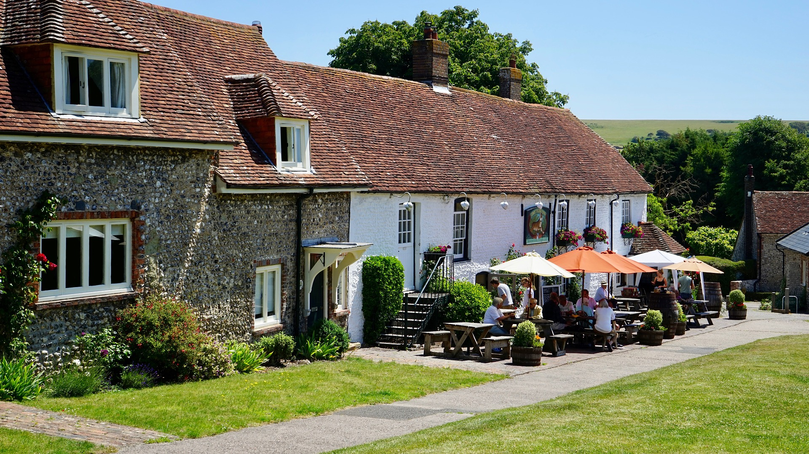
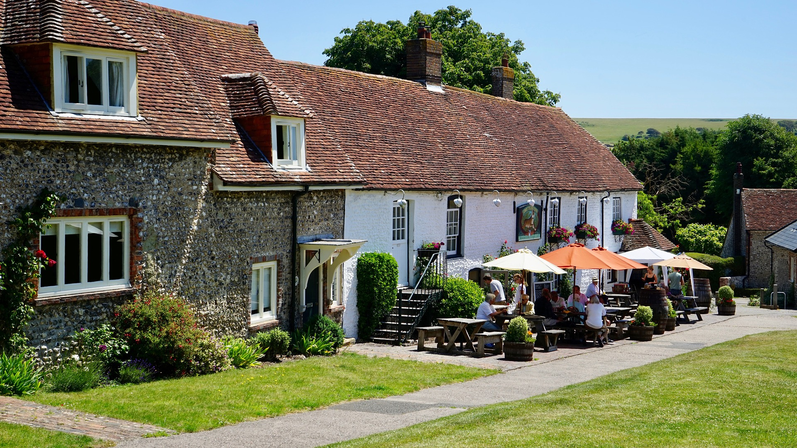

Dinner
- Fish and Chips £8
- Bangers and Mash £7
- Toad in the Hole £7
- Sunday Roast £10
- Shepard's Pie £9
Sausages and mashed potato, with peas and gravy.
Sausages in Yorkshire pudding batter served with gravy and vegetables.
Roasted beef, roast potato, Yorkshire pudding, stuffing, vegetables (roasted: parsnips, Brussels sprouts, peas, carrots, and broccoli) and gravy.
Ground lamb cooked with vegetables and Guinness for an extra flavor boost, then topped with fluffy mashed potato and baked.


 
